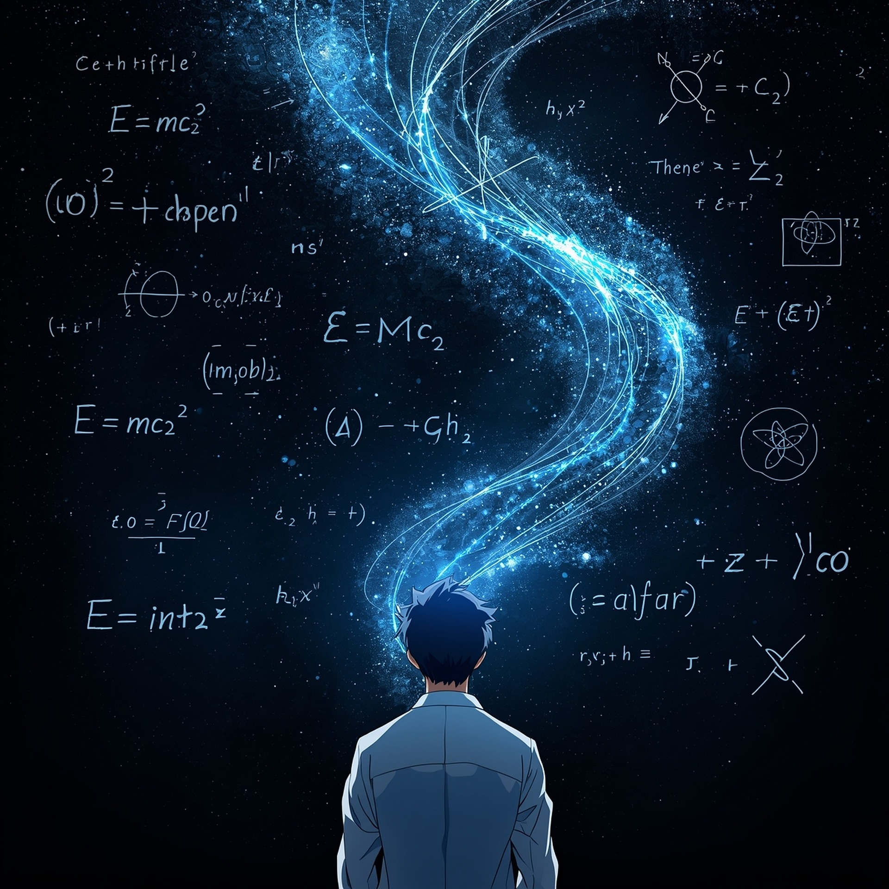
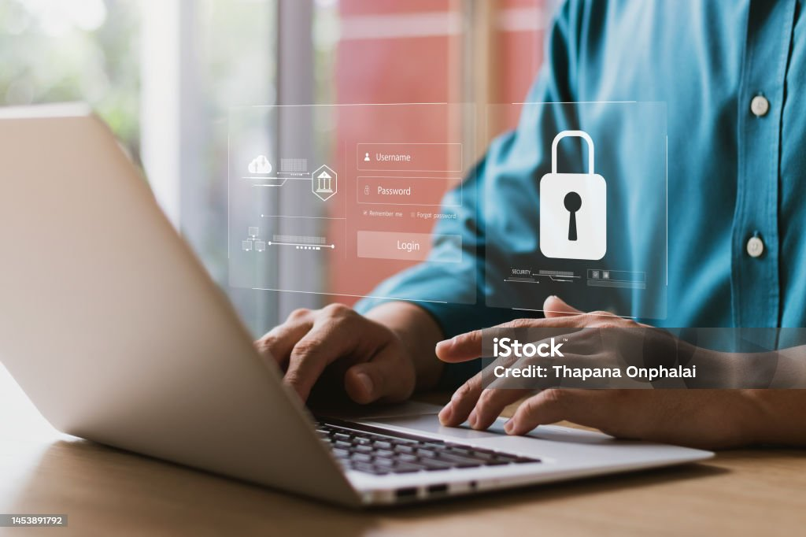

Mes Réalisations
Projets de Développement
Voici une sélection de mes projets les plus significatifs. Chacun représente une étape importante dans mon apprentissage et démontre différentes compétences techniques que j'ai acquises.
Application Python complète avec recherche avancée, statistiques et gestion multi-utilisateurs
Jeu de simulation POO avec sauvegarde JSON, système de tours et carte interactive

Site multipages responsive avec navigation fixe, formulaires et design moderne

Application console avec opérations complexes et gestion d'historique
Tableau de bord interactif avec visualisation de données et statistiques en temps réel

Service web avec authentification, CRUD complet et documentation Swagger
Technologies Utilisées
Mes projets m'ont permis de travailler avec une variété de technologies et d'outils. En Python, j'utilise des bibliothèques comme JSON pour la persistance des données, et je maîtrise les concepts de POO pour structurer mes applications. En web, je crée des interfaces modernes avec HTML5, CSS3, Flexbox et Grid.
Je m'efforce constamment d'améliorer mes compétences en suivant les meilleures pratiques de développement : code propre, commentaires pertinents, gestion de versions avec Git, et tests pour assurer la qualité de mes applications.